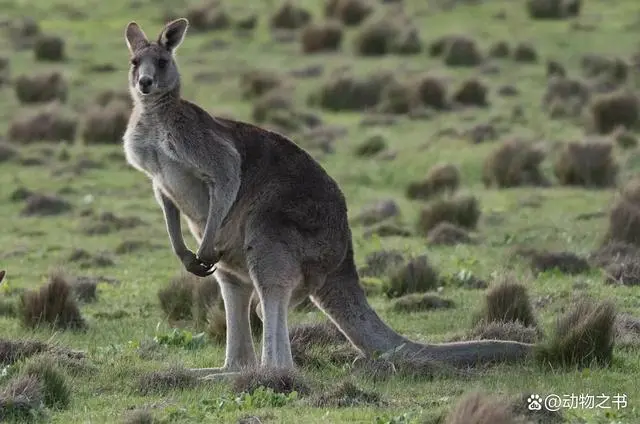
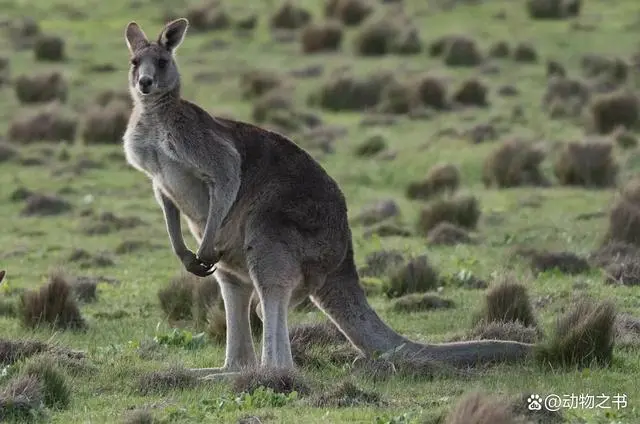

关于袋鼠
袋鼠是一种独特的哺乳动物，它们生活在澳大利亚和其他大陆上。袋鼠以其独特的跳跃方式而闻名，它们可以跳得非常高。
金色和棕色的袋鼠
金色和棕色的袋鼠是澳大利亚最著名的物种之一。它们的毛色独特，金色代表阳光，棕色代表大地。这种颜色组合使它们在澳大利亚的自然景观中非常显眼。
袋鼠的生活习性
袋鼠主要以草本植物为食，它们可以在一天内吃掉大量的植物。袋鼠的尾巴有特殊的功能，可以帮助它们保持平衡和控制速度。此外，袋鼠还有一种特殊的袋子，可以用来喂养幼崽。
袋鼠是一种独特的哺乳动物，它们生活在澳大利亚和其他大陆上。袋鼠以其独特的跳跃方式而闻名，它们可以跳得非常高。
金色和棕色的袋鼠是澳大利亚最著名的物种之一。它们的毛色独特，金色代表阳光，棕色代表大地。这种颜色组合使它们在澳大利亚的自然景观中非常显眼。
袋鼠主要以草本植物为食，它们可以在一天内吃掉大量的植物。袋鼠的尾巴有特殊的功能，可以帮助它们保持平衡和控制速度。此外，袋鼠还有一种特殊的袋子，可以用来喂养幼崽。